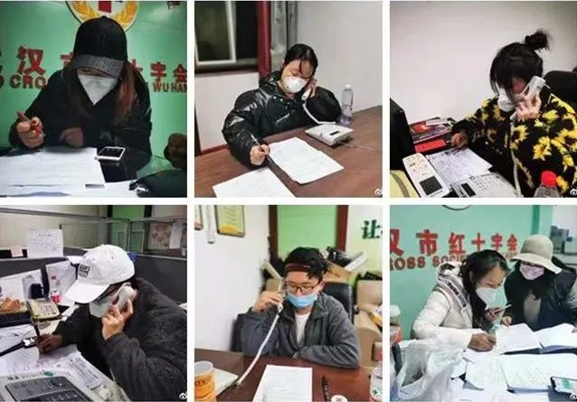
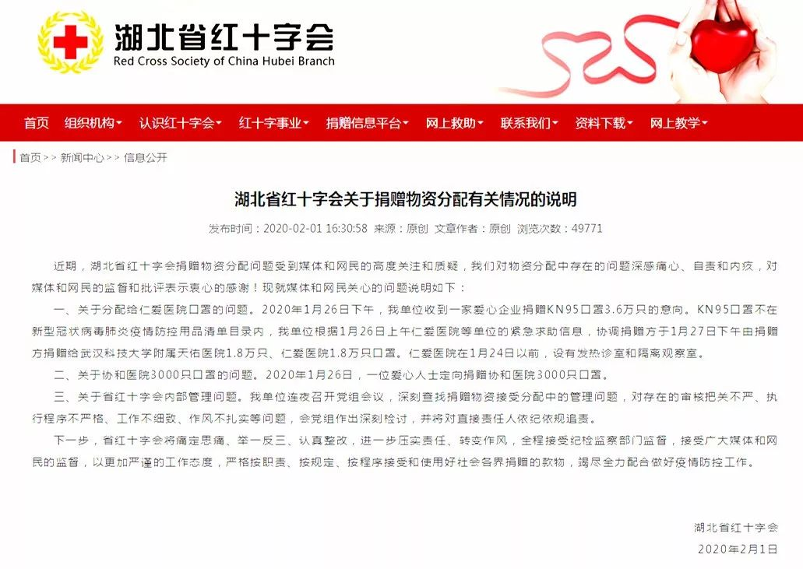

武汉官方称红会“调配不及时”， 医院拿捐赠文件却取不到物资
原文链接 备份链接 01.02.2020本文字数：3601，阅读时长大约6分钟 导读：关于一线医院防护物资紧缺的消息满天飞，湖北省红十字会、武汉红十字会物资分配效率和公平性问题引发质疑。 作者 | 第一财经 李澄晚 1月31日下午，涂先 …
记者/杨宝璐
编辑/宋建华

武汉市红十字会的志愿者们
在疫情中心武汉，街头空空荡荡，但仍不断有志愿者穿梭在物资仓库、医院、高速路口运送防护物资。物资源源不断地运送进来，但1月31日，越来越多呈现在人们眼前的，却是武汉若干定点医院物资领取困难的消息。
2月1日，中国红十字工作组赶赴武汉，指导、督促湖北省、武汉市两级红十字会做好捐赠款物的接收使用管理工作，确保规范高效、公开透明，主动接受社会监督，为一线医护人员提供有力支援。
同一天，武汉市红十字会对定向捐赠流程作出调整：境内外单位或个人如有定向捐赠医院，可直接与定向捐赠医疗机构对接，确认后可直接将物资发往受捐单位。
而此时，汪慧已经将自己志愿者工作的重心，从红十字会的接线员转移到了为民间慈善组织运输物资上。在她看来，这是一条更加直接有效的途径。

湖北省红十字会官网：对物资分配中存在的问题深感痛心，全程接受纪检监察部门监督，接受广大媒体和网民的监督

志愿者24小时三班倒
深一度：你是退出红十字会志愿者团队了吗？
汪慧：其实不算退出，在红十字会做志愿者是大家自由排班，你可以选择排班，也可以不，我还在那个群里，但我最近没有主动要求排班了，那样也就不会排到我。
深一度：武汉红十字会志愿者岗位大概有几类？各有多少人？
汪慧：主要是电话接听，物资搬运、仓库管理三块，还有一些零散的，比如后勤保障。其中最大的组就是电话接听组，因为有很多部热线电话，再就是仓库管理和帮忙运输的，但人手都不是很多。目前接听组人最多，大概有一百人左右，仓库管理和物资搬运这块我知道的大概有三四十人。
深一度：仓库管理是指国博的仓库吗？
汪慧：对，是国博的仓库，之前还有国药控股集团在光谷那边的仓库，是武汉最大的一家医药公司，有比较好的存储条件，但仓库不够大，很快堆满了，后来才换到国博的仓库。仓库管理除了每天负责清点的志愿者，更多的是帮忙上下搬运货物的志愿者。
深一度：这些志愿者是长期的，还是肺炎疫情专门招募的？
汪慧：我是在红十字会微信公众号博爱江城看到的招募信息，当时发了几条紧急公告，说急缺接线员，当时是要求招募50个志愿者，我报了名。我感觉大部分、至少接线员中的大部分都是因为这次肺炎疫情而临时来的。
深一度：接听组的工作是怎样的？
汪慧：接听组是这样，有人今天有时间，有人没有，还有人临时身体不舒服，所以是轮换的。工作时间是24小时三班倒，晚上的班会长一点，因为电话少一些。白天特别忙，电话就没断过，所以时间短一点，我早上值班差不多6个半小时到7个小时，反正保证必须等下一班的人来了，换你这班，你才能离开接听座位。
深一度：仓库管理那边也是24小时三班倒吗？
汪慧：是的。
深一度：存在人手不够的情况吗？
汪慧：这两天志愿者群里面很多人就没报排班了，之前——至少到我去的最后一天（1月29日），人手是绝对够的，每一班都是满满的。
深一度：搬运物资是红十字会把物资送到医院，还是医院自己来取？
汪慧：都有。红十字会最早是希望能够把物资送到医院去，但后来发现（都送到医院）人手、车都不够，所以后来变成了如果医院很急，又是定向捐赠，医院可以自己派车来拿，因为确实没有那么多车，红会的车甚至还要去高速路口接一些没法运进城的物资。

接听组的微信群截图
提意见结果被踢出群
深一度：听说有志愿者提了一些意见？
汪慧：现在网上提到的那些意见，我们都提过。同时我们自己在工作中发现的一些问题也提过。我们值班的组长、负责人，其实都只是志愿者，只有红十字会的正式工作人员有资格拍板决定一些事情，所以我们反映上去的意见，组长他们也没办法做决定，每次回答都是我们往上报，你们等一等，然后就没有下文了。
所以后来大家就在群里直接@能拍板决定事情的人，但结果是提意见的人直接被踢掉了。
深一度：具体反映的意见有什么？
汪慧：比如说账目公开，大家看到网上那些消息，很多志愿者觉得应该好好做一下账目公开这块，我们志愿者可以帮助核账、清点物资、公开信息，但都没有被采纳。
我个人提过建议，有些手续可以简化一点，之前我们接电话，有些物资（捐赠者）是想直接送到医院比较快，或者有别的原因比较急，但顺丰如果想走绿色通道，必须要有红十字会出具的说明或者接收函。但红十字会说，如果物资不是往我们这边运，我们没办法核查，不能开这个函。
我们当时就建议说，那我们可以派些工作人员去高速路口或仓库或医院，去那里清点，看没问题就帮着开函，或者让医院先出个证明，说明确实这批物资是送到医院的，我们红十字会就开这个证明，这样物资不就可以很顺利的运进来吗？
但红会的工作人员说这是要背责的，他们没有被授予这个权限，所以就统统不可以。我们当时说你们可以往上反映一下，但并没有用。
还有，就是要求红会给我们的培训材料一定要准确。比方说，最早红十字会是可以接受海外捐赠的，后来因为能力不够，就把这一部分分给了湖北省慈善总会，培训单子上写了湖北省慈善总会的座机、包括海关的电话，让我们给别人报号码，让捐赠人自行去对接。但我们在那几天接到过无数电话，告诉我们电话全是错的。我们反映过很多次电话号码有误，但都没有改。
深一度：你所在的群里，因为提意见被踢的人有多少？
汪慧：没有具体统计过，但我知道每天都有。因为总会有志愿者看不过眼，但大部分人像我一样，后来就不说话了，一开始你想说的问题被别人说了，然后他们被踢了之后，你就不想再去跟他们争了，觉得没有意义。
深一度：你所在的群踢人的是志愿者组长还是正式员工？
汪慧：是正式员工，因为她是负责志愿者招募的，我们报名什么的都要通过她，她在群里负责排班。
深一度：她有说过搜集志愿者意见上报的话吗？
汪慧：没有说过。
深一度：志愿者除了在群里提意见，还有没有其它途径上报意见？
汪慧：每值完一个班，会开一个简单的总结会，总结一下今天哪些电话比较重要，什么事情我们解决不了，需要工作人员去解决，但基本上只是就事论事。我们提的意见都比较宏观，比如顺丰绿色通道应该帮助盖章，直接就一票否了。还比如说我们觉得工作方式应该怎么改进的，基本没有被采纳过。
深一度：意见没有被采纳，红十字会有没有具体的不予采纳的原因？
汪慧：有，我之所以觉得很不舒服的是，其实他们的理由我都能接受，但他们应该向上汇报才对。比如还拿顺丰举例子，我们问为什么不能给他们盖章放行，红会的工作人员解释很简单：因为不在我们的执行范围内。
很多志愿者在群里说，我们知道仓库里有东西，能不能你们向上面汇报，快点分下去，红十字会就说这份职责不在我们这儿，我们没有权力做这个事。给我们的感觉就是，这个事解决不了。
武汉回应红十字会调拨物资问题：周转不够快
怀疑自己做的到底值不值
深一度：志愿者来工作有补贴吗？
汪慧：没有。我们除了每天在那里吃一顿工作餐之外，不拿一毛钱。
深一度：志愿者负责接线、运输、仓库管理，那正式工作人员的工作内容是什么？
汪慧：我知道的至少有两个人，一个工作人员是专门负责财务，每天要核一下账目，因为账全部都打到红十字会的账户里。另外还有一个工作人员是二楼捐赠大厅，专门用来开各种凭证的，比如出城的凭证，由其负责盖章。
还有几个男性工作人员在仓库那边，负责需要拍板决定的事，比如说有医院来取物资，只有他们才能够决定能不能拿走，志愿者听他们指挥，他们应该是在负责跟指挥部、卫健委对接。
深一度：你说有些志愿者怀疑自己做的事情到底值不值，为什么会有这样的想法？
汪慧：目前志愿者没有受到公众质疑，很多人觉得我们这么辛苦，通宵熬夜，就是希望物资能够快点到医护人员手上。但这件事情现在跟我们想的不一样，我们努力了，却没有达到我们想要的效果，会有一种很无奈无助的感觉。
每天我们接到电话，这边是各种好心人、各种捐东西，那边接到的电话是医院打来的，说急需物资，说东西在你们红十字会，而我们只能跟他们说我们没有办法，那种无助感真的很强烈。
今天（2月1日）听到还在接线的小伙伴说，大概意思就是开会让接线志愿者说得话要模棱两可一点，不要乱说或者乱做，让别人容易误会，然后在网上造谣的话。大家听了就很灰心。
深一度：最近两天志愿者招募不顺利吗？
汪慧：我这两天观察了一下排班表，有几个跟我一样，就默默地没有报名排班了。之前每次排班都是满的，现在每次还要喊，比如说需要15个人，现在还差6个之类的，喊很久都不一定有足够的人报名。
深一度：你觉得在民间公益组织作志愿者和在红十字会作志愿者有什么区别？
汪慧：我们现在做民间慈善组织运输物资，没有繁杂的手续，很简单很直接。比如说有些物资有的人愿意捐，但不符合医疗标准，我们就说没事，不符合医疗标准给我们也可以，我们再帮助找无需医疗标准物资的需求方。
再比如，有些物资到了武汉进不来，没关系，我们义工有车，直接过去拉进来就是了。有些是需要国外代购的求助，我们马上就在义工圈里面募捐，别管是需要3000块还是5000块，账目真的是筹完大概20分钟以后就公示给大家看，然后火速打给人家买东西。
我们在武汉少说几千、上万个义工是有的，所以这种交流渠道特别快，账目也非常快。我们平时经常做这些事，没有像红十字会那样几个亿，我们也就几千一两万，很快大家都能搞定。
但红十字会这边不是，比如说捐钱捐物，反正你打电话到这里来，把东西寄到这里，但是寄到之后，我得中间通过上级部门，跟他们进行对接，告诉他们现在红十字会的仓库里都放了哪些东西，然后上级部门再来分配给医院。而且有时候通知医院过来拿，有时候又是红十字会给送，然后送过去的东西，因为红十字会的人都不是专业的医疗工作人员，甚至送过去的东西都不一定是符合医院标准的。
说白了，医院需要的东西和现在捐过来的东西，红会缺乏点对点直接快速对接的工作流程。
（为保护受访人，文中汪慧为化名）
【反侵权公告】本文由北京青年报与腾讯新闻联合出品，未经授权，不得转载。


武汉街头的“摆渡人” | 深度报道

我与“新型冠状病毒”搏斗的22天 | 深度报道

对话“中国顶级sars病房”专家童朝晖 | 深度报道


原文链接 备份链接 01.02.2020本文字数：3601，阅读时长大约6分钟 导读：关于一线医院防护物资紧缺的消息满天飞，湖北省红十字会、武汉红十字会物资分配效率和公平性问题引发质疑。 作者 | 第一财经 李澄晚 1月31日下午，涂先 …
原文链接 备份链接 【财新网】（记者 萧辉）一边是抗疫一线医院的医护人员急缺口罩、防护服，一边是红十字会仓库堆积大量社会捐献的医疗物资，近日武汉市红十字会因为发放捐赠物资速度缓慢、程序繁杂引发武汉多家医院医护人员和公众的不满。今天（2 …
原文链接 备份链接 海内外源源不断捐赠武汉，各大医院仍全面告急。被指定接收捐赠物资的主要机构湖北省与武汉市红十字会系统成为众矢之的，他们原本应该为重大突发事件做好准备，却一开始就因专业能力不足遭遇了信任危机。 本刊记者探访了武汉红十字会位 …
原文链接 备份链接 “追踪一个人捐赠的物资是真的是没有时间去做的，因为每天捐赠的人太多了” \ 思思，武汉红十字会临时志愿者，话务组 \ 中国红十字会截至 1 月 25 日，累计接受爱心捐赠达 3.4 亿元，接受捐 …
原文链接 备份链接 数据来源：腾讯新冠肺炎疫情实时追踪 近日，武汉红十字会的热搜稳升不降， 缘起于接受全国3.4亿捐赠，却仅调拨2000万的数据； 昨日，湖北省红十字会成为众矢之的， 物资调配、透明度均大受质疑， 其回应也漏洞百出。 据 …